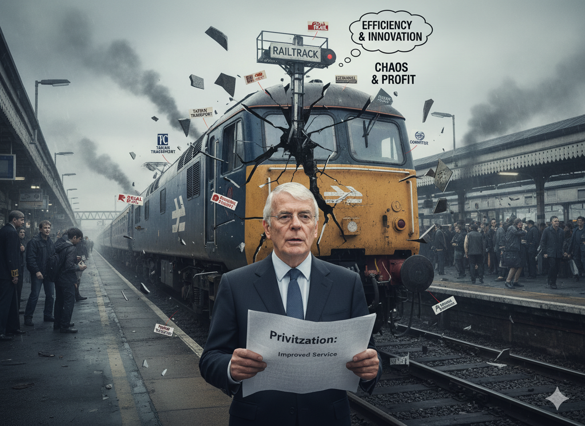
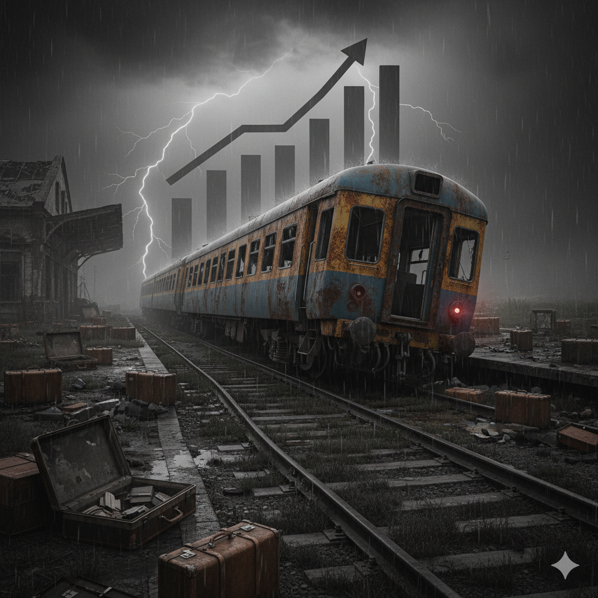
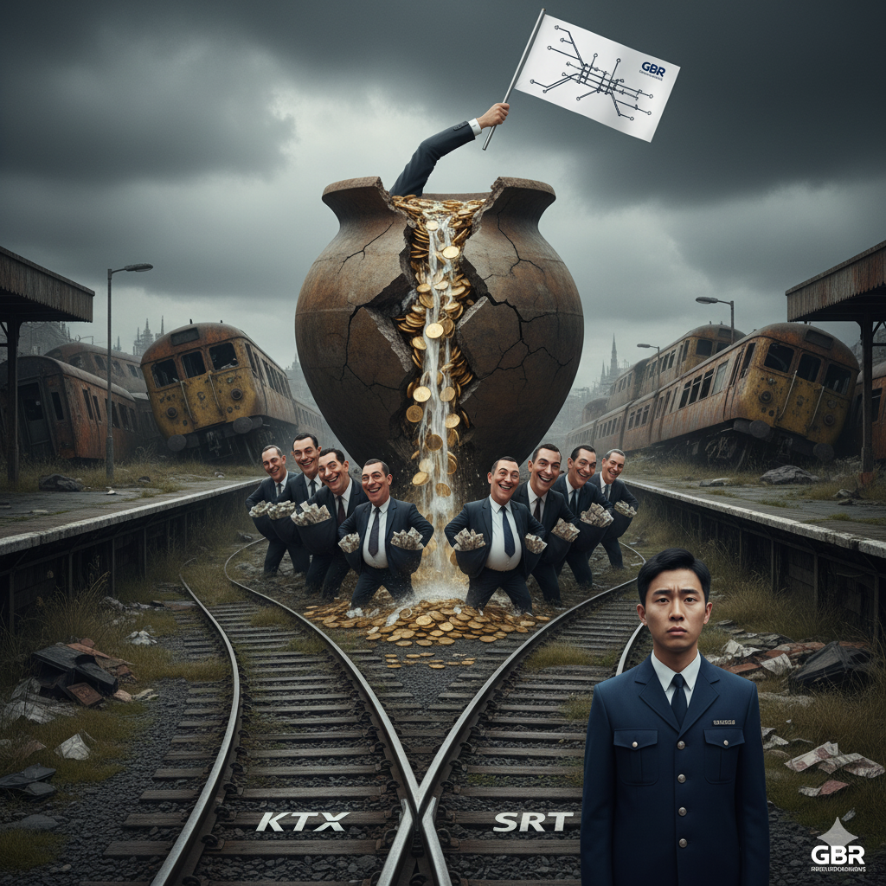

[집중기획 3부작] KTX-SRT통합, 더 이상 미룰 수 없는 과제
1편. 경쟁 신화의 종말, 통합으로의 회귀
1편. 경쟁 신화의 종말, 통합으로의 회귀
1편. 보이지 않는 전선-노조 무력화 전략
근골격계 위험요인조사, 제대로 알고 우리의 건강권을 쟁취합시다.
"그거 완전 조삼모사 아닙니까?" 한 마디로 좌중을 압도하는 필살기 대방출!
지부, 투쟁 플루트 1기 대원 극비 모집! 당신의 메마른 감수성을 풀충전할 기회!
KTX와 SRT로 분리된 한국 고속철도 운영 체제는 1990년대 영국에서 시작된 철도 민영화 모델에 뿌리를 두고 있다. '경쟁을 통한 효율화'라는 명분으로 추진된 이 모델은, 그러나 지난 30년간 세계 곳곳에서 심각한 부작용을 낳으며 실패로 판명났다. 이제 세계 철도 정책의 흐름은 다시 '통합'과 '공공성 강화'로 회귀하고 있다.
1993년 영국 정부는 영국국철(British Rail)을 100여 개 회사로 분할 매각하며 철도 민영화의 서막을 열었다. 정부가 약속했던 서비스 개선과 재정 절감은 신기루에 불과했다. 그 자리를 채운 것은 요금 폭등, 안전사고 급증, 그리고 막대한 국민 혈세 낭비였다.
민간 운영사들은 단기 수익에 몰두하며 안전 투자를 외면했다. 그 결과는 대형 참사로 이어졌다. 서비스 품질은 저하되었고, 열차 지연 및 취소는 일상화되었다. '경쟁'은 오히려 비효율을 낳았다. 분리 운영으로 인한 시스템 중복, 유지보수 비효율 등 사회적 낭비는 매년 수천억 원에 달했다. 결국 2021년, 영국 정부는 사실상의 '재국유화'를 선언하며 새로운 국영 통합 기관 '대영철도(GBR)' 설립 계획을 발표했다. 30년간의 고통스러운 실험이 실패했음을 공식 인정한 것이다.
20%
요금 폭등
42명
주요 참사 사망자
5.8조원
긴급 구제금융
프랑스는 1997년 철도공사(SNCF)를 열차 운행과 선로 관리로 분리하는 상하분리 정책을 도입했다. 소유권은 국가가 유지했지만, 조직 분리는 비효율과 막대한 재정 적자를 낳았다. 특히 선로 관리 조직에 떠넘겨진 부채는 프랑스 철도 전체의 족쇄가 되었다.
이에 프랑스 정부는 과감한 결단을 내렸다. 2014년 분리된 조직을 다시 SNCF로 통합하는 법안을 통과시켰고, 2018년 에마뉘엘 마크롱 대통령은 한 걸음 더 나아갔다. SNCF의 누적 부채 중 350억 유로(약 50조 원)를 국가가 직접 떠안는 파격적인 결정을 내린 것이다. 이는 철도의 공공성을 유지하기 위해 국가의 책임 있는 역할과 과감한 재정 투입이 필수적이라는 교훈을 명확히 보여준다.
"프랑스 정부는 철도를 국가 기간산업으로 규정하고, SNCF의 막대한 부채를 국가가 책임지며 통합의 발판을 마련했다."
영국과 프랑스의 사례는 '분할과 경쟁'의 시대가 저물고 '통합과 공공성'의 시대가 오고 있음을 보여준다. 그러나 한국의 KTX-SRT 분리 체제는 이러한 세계사적 교훈을 역행하는 결정이다. 2016년 도입된 이 체제는 실패한 영국 모델의 변형된 복제품에 가깝다.
정부는 SR의 '10% 저렴한 요금'을 경쟁의 효과로 내세우지만, 이는 불공정한 구조 속에서 탄생한 착시 효과에 불과하다. 코레일은 벽지노선 운영 등 모든 공적 의무(PSO)를 부담하는 반면, SR은 황금 노선인 경부·호남선 운행 독점권을 부여받았다. 이러한 구조적 불평등 속에서 발생하는 사회적 낭비는 2018년 국토교통부 연구용역 결과, 연간 559억 원에 달하는 것으로 추산됐다.
전 세계가 실패를 인정하고 통합의 길로 나아가고 있는 지금, 한국 철도만 '분리'라는 낡은 유령에 사로잡혀 있을 이유는 없다. KTX-SRT 통합은 단순히 두 회사를 합치는 것을 넘어, 시대착오적인 정책을 바로잡고 한국 철도의 공공성과 효율성을 한 단계 끌어올리는 역사적 과업이다.
목차로 돌아가기